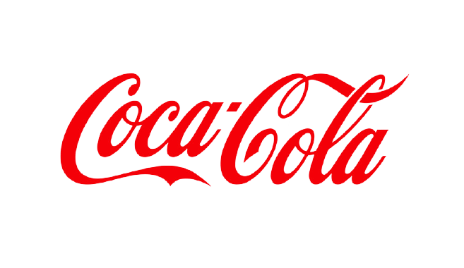

Cores: azul, vermelho, amarelo e verde.
Explicação: o Google sempre confunde a cabeça das pessoas quando a ideia é tentar achar um padrão nas cores das letras. Primeiro azul, depois vermelho, depois amarelo. Quando você pensa que o padrão vai se repetir, entra o verde. Inicialmente, a ideia era exatamente essa: passar uma ideia de brincadeira. Segundo Ruth Kedar, a designer que criou o logo, em entrevista à Wired, a intenção era trabalhar com as cores primárias, mas depois inserir uma secundária (o verde), mostrando que o Google "não segue regras e padrões".
BMW

Cores: azul e branco
Explicação: apesar da popular - porém falsa - versão que diz que o logo representa uma hélice de avião no céu (a empresa começou no ramo aéreo), a explicação verdadeira é mais simples: azul e branco são as cores oficiais da Baviera, o estado de origem da empresa alemã.
Cores: azul
Explicação: Segundo o próprio Mark Zuckerberg, em entrevista à revista The New Yorker, ele é daltônico e não reconhece corretamente vermelho e verde. Mas azul é uma cor muito distinta para ele. Daí a escolha.
Coca-Cola

Cores: vermelho e branco
Explicação:Nos anos 1890, no começo da marca nos EUA, a empresa pintava de vermelho os seus barris que carregavam o xarope usado na fabricação da bebida. Era uma maneira dos fiscais reconhecerem rapidamente os barris da Coca e não confundi-los com os barris de bebidas alcoólicas. Inclusive, a primeira revista corporativa da marca se chamada "The Red Barrel" (O Barril Vermelho) e foi lançada em 1924. Por esse motivo, a marca decidiu levar adiante a cor em sua identidade visual.